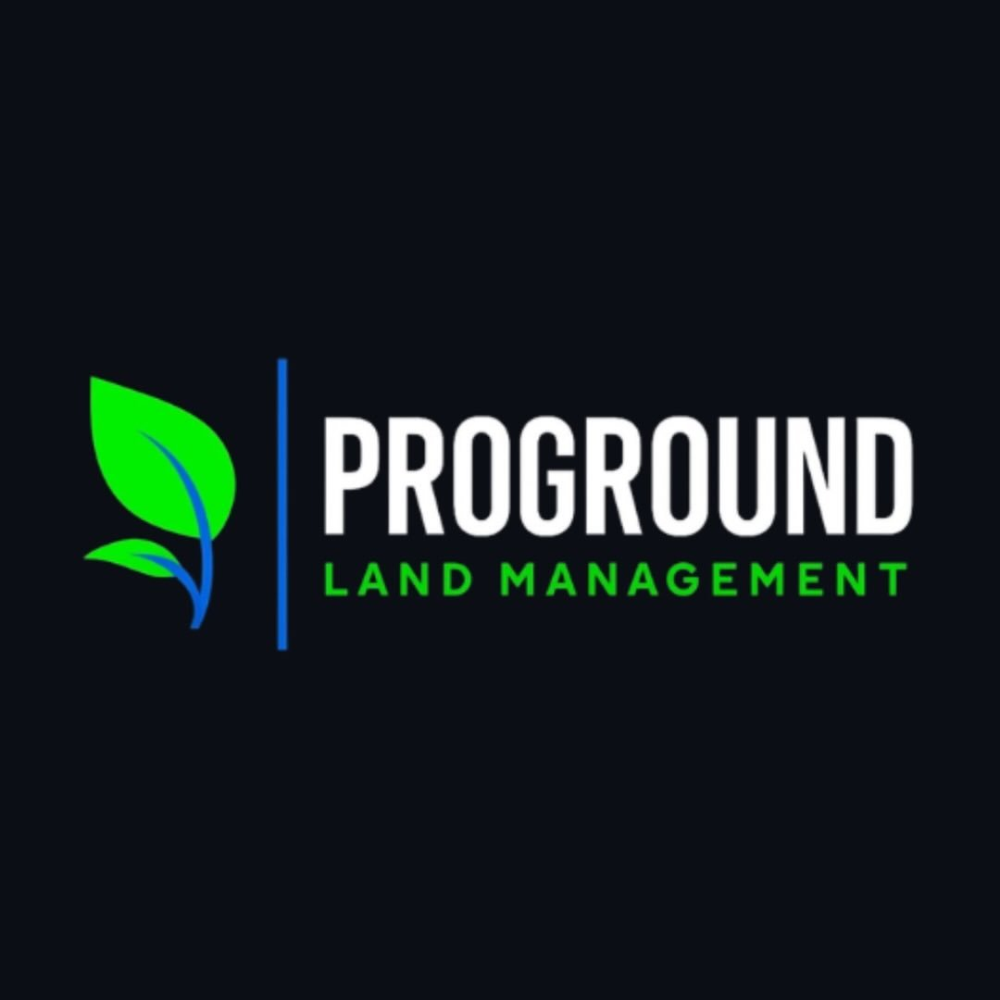

Leaf-sprout + survey line
Bright-green mark, blue survey bar divider, white wordmark, green "LAND MANAGEMENT". Designed for Deep Field. A clean vector and a light-background variant are still required from the client.